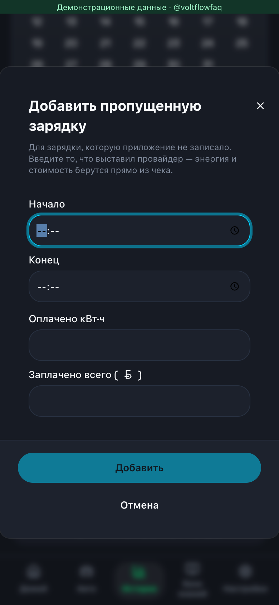
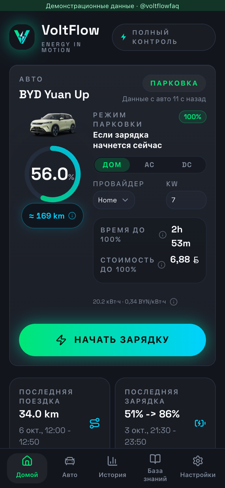
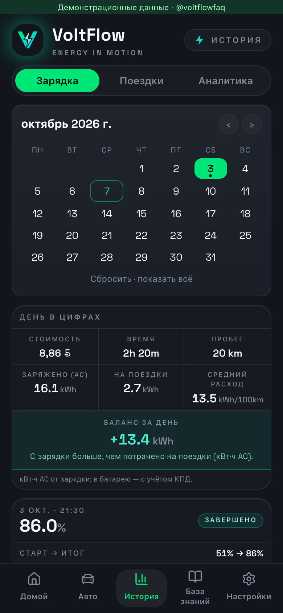
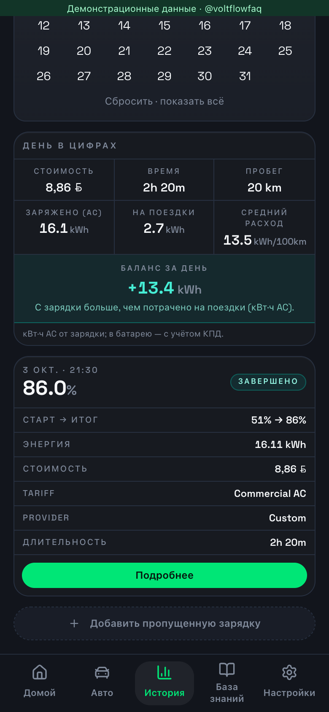

02-manual-charge · Добавление зарядки по чеку — форма без сохранения



Демонстрационные данные. 2026-10-07T09:19:52.752Z. Проверка: не завершена — см. manifest.json. Реальная связь с автомобилем и Telegram не проверялась.



